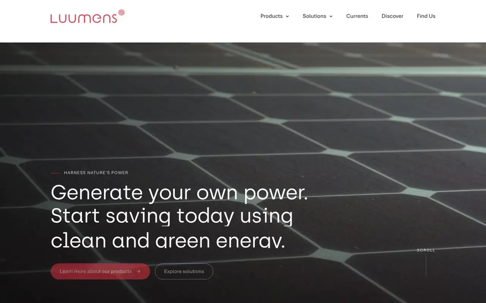
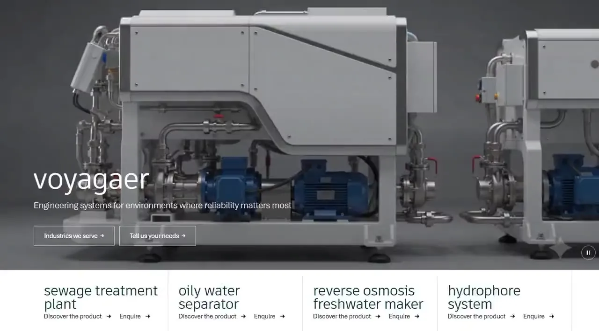
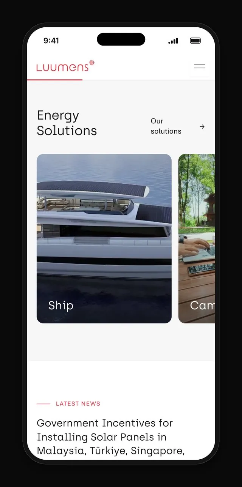
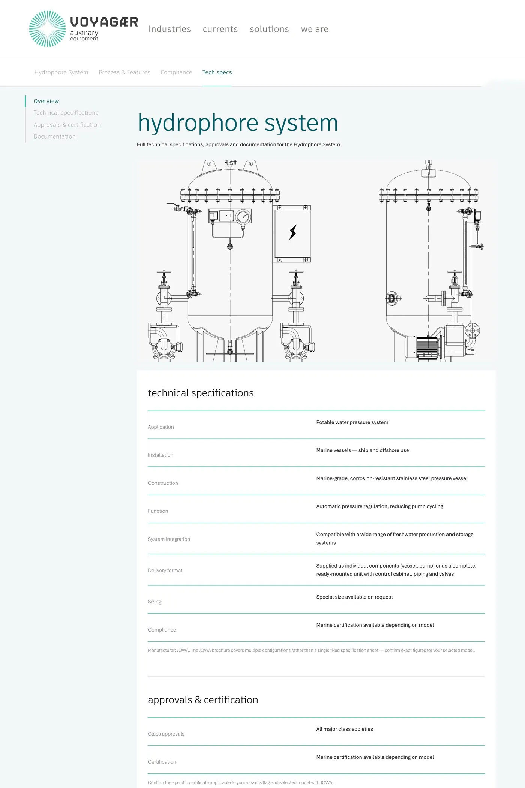

I design & build distinctive websites.
Index
Selected work · 2025 — now- 01
Ganko.sg
RestaurantFreelance2025 - 02
Luumens

EnergyIn-house · Pomar Engineering2026 - 03
Voyagaer

MarineIn-house · Pomar Engineering— - 04
Concepts
 Four pitched homepagesConcept—
Four pitched homepagesConcept—


Services
Design and build, by one person01New website
From first sketch to a launched site, for businesses that need a proper online presence.
02Redesign
For businesses that have outgrown their site: clearer navigation, better content, consistent on every screen.
03Custom front-end
When a template won’t do: hand-coded pages, motion and interactive components.
04Ongoing improvements
For a site you already have: new pages, layout and content updates, performance and new features.